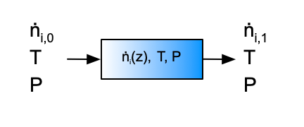

| \(\dot{V}_{A,0}\) (sccm) | \(\dot{V}_{Y,0}\) (sccm) | \(\dot{V}_{Z,0}\) (sccm) | fA (%) |
|---|---|---|---|
| 30 | 0 | 0 | 98.3 |
| 30 | 0 | 50 | 90.9 |
| 30 | 0 | 100 | 85.5 |
| 30 | 0 | 150 | 73.1 |
| 30 | 50 | 0 | 93.5 |
| 30 | 50 | 50 | 82.5 |
| 30 | 50 | 100 | 76.0 |
| 30 | 50 | 150 | 65.6 |
21 Analysis of Kinetics Data from a PFR
This chapter completes the Kinetics Data Analysis section of Reaction Engineering Basics. It focuses on the generation and analysis of kinetics data from a PFR. Chapter 18 presented an overview of kinetics data generation and analysis, and Chapters 19 and 20 examined analysis of data from BSTRs and CSTRs, respectively. Much of the information presented in those chapters also applies to PFRs and won’t be duplicated here.
21.1 Laboratory PFRs
In its most basic form, a PFR is simply a length of rigid tubing or pipe. Reagents flow in at one end and out at the other. The key assumption of the PFR model is that of plug flow. As explained in Chapter 6 and Appendix G, the fluid flow velocity is constant across the tube diameter in plug flow. There is no mixing in the axial direction, and perfect mixing in the radial direction. Thus, in contrast to stirred tank reactors, the composition varies spatially in a PFR. That is, as one moves from the reactor inlet to the reactor outlet, the concentrations of reactants decrease and those of products increase. (The temperature and pressure can also vary along the length of a PFR, but when generating kinetics data the reactor usually operated isothermally and with negligible pressure drop).
A second difference between PFRs and stirred tank reactors is that there is no agitation in PFRs. For this reason, PFRs are very often used to generate kinetics data for heterogeneous catalytic reactions. Recall, a heterogeneous catalyst is a material that exists as a separate phase from the reacting fluid and that causes the rate of one or more reactions to increase. Most commonly heterogeneous catalysts are porous solids that are immersed in the reacting fluid. It is difficult to agitate the solid particles if a stirred tank reactor is used. When a heterogeneous catalytic reaction is studied in a PFR, the catalyst is typically contained within the reactor tube as a stationary packed bed through which the reacting fluid flows. A section of pipe filled with small pellets or beads that are held in place by screens or other means offers a good mental picture of a packed bed.
The ideal PFR design equations can be used to model a packed bed reactor. To do so, the combined packed bed and reaction fluid are treated as if they are a single, homogeneous fluid. The most important assumption that this introduces to the analysis is that there are no concentration or temperature gradients at the interface between the solid and fluid phases or within the pores of the solid. In reality, there will be concentration and temperature gradients between the bulk of the fluid and the surface of the heterogeneous catalyst particles, and there will be gradients within the pores of the catalyst particles as discussed in Chapter 13.6.3. For present purposes, the important point is that these gradients must be negligibly small if the PFR design equations from Chapter 6 are used to model the reactor.
21.1.1 Testing the Ideality of a PFR
Before a PFR is used to generate kinetics data, it should be tested to ensure it conforms to the asumptions of an ideal PFR. Importantly, it should be tested for plug flow, and if it is a packed bed, it should be tested for negligible concentration and temperature gradients.
Testing for plug flow is not easy. As noted in Appendix A, in laminar flow the radial velocity profile is parabolic, and it flattens as the flow becomes turbulent. The Reynolds number, \(N_{Re}\), offers a measure of how turbulent the flow is. It can be computed using Equation 21.1. In cylindrical pipes, a Reynolds number greater than ca. 3500 indicates turbulent flow; a much greater Reynolds number is needed in order to approach plug flow.
\[ N_{Re} = \frac{\rho vD}{\mu} \tag{21.1}\]
Smoke- or dye-based flow visualizations are useful for gauging the mixing in an agitated vessel, but they are difficult to apply for gauging plug flow. Alternatively, a small amount of a dye or otherwise detectable species can be injected at the reactor inlet. If the injection is effectively instantaneous, the dye should emerge from the reactor all at once. The greater the time span over which the dye emerges, the greater the deviation from plug flow. Essentially this involves measuring the residence time distribution or age function for the reactor. Doing so is described in Chapter 23. The measured age distribution function can then be compared to that expected for plug flow to determine whether plug flow prevails in the reactor.
As noted above, when a tubular reactor contains a packed bed of solid particles, gradients in concentration and temperature can exist within the fluid that is close to the surface of the solid particles. When present, these are referred to as external gradients because they are external to the solid material. A common experimental test for external mass transfer limitations (i. e. for non-negligible external concentration gradients) in a packed bed reactor relies on the fact that for an ideal PFR, the conversion depends only upon the residence time within the reactor and not the linear velocity of the flowing fluid. The external mass transfer coefficient, in contrast, does depend upon the linear velocity of the flowing fluid. Thus, if the conversion changes when the linear velocity is changed while holding the residence time constant, this indicates that the apparent rate is being affected by the rate of external mass transfer.
One approach to this test is to measure the conversion at varying fluid velocities with a fixed amount of catalyst and plot the conversion versus the residence time. The experiment is then repeated using a different amount of catalyst. In the absence of mass transfer limitations, the plots should superimpose. An alternative approach is to measure the conversion with a given amount of catalyst and at a given fluid flow rate. The conversion is then measured again using a different amount of catalyst, but with a flow rate that gives the same residence time as in the first experiment. In the absence of external mass transfer limitations, the conversions should be equal. Care should be taken in applying this test, however, because at the very low Reynolds numbers that are often used in laboratory reactors, the mass transfer coefficient depends very weakly upon the fluid velocity (Chambers and Boudart 1966).
When external mass transfer limitations are very severe, a first-order rate expression, Equation 21.2, will be found to fit the experimental data very well. In this case it is more appropriate to refer to Equation 21.2 as the apparent rate expression because the rate it refers to is the rate of external mass transfer and not the rate of reaction. The true rate expression can be first-order, but when external mass transfer limitations are severe, the apparent activation energy, \(E\), will be very low (≲ 10 to 15 kJ mol-1). True reaction rates typically have activation energies that are greater than this. This can serve as a warning indicator when kinetics data are being analyzed. If the reaction kinetics are observed to change to first order and the activation energy is simultaneously observed to become small, the kinetics data may contain experiments where external transport limitations existed. There are also computational tests for external transport limitations that can be applied to test for external gradients (Mears 1971; Satterfield 1980; Wheeler 1951).
\[ r=k_0\exp{\left( \frac{-E}{RT} \right)}C_i \tag{21.2}\]
Most heterogeneous catalysts are porous solids with very high specific surface areas. Most of this surface area is internal and corresponds to the walls of pores (picture the catalyst interior as looking like a microscopic sponge). The only way for reactants to reach the majority of the catalytic sites is to diffuse into the pore structure. If the rate of the reaction at the active sites is large, this can lead to the formation of significant internal concentration gradients within the pores. For present purposes, the goal is to be able to identify experimental conditions where these gradients are insignificantly small. As a general rule of thumb, internal concentration gradients are more likely than external concentration gradients.
One experimental test for the presence of internal heat or mass transfer limitations is to repeatedly measure the conversion using finer and finer catalyst particle sizes. In the absence of internal gradients, the conversion should not depend upon the particle size, but if gradients are present, their effects should diminish as the particle size is decreased. This happens because the diffusional path length becomes smaller as the particle size is decreased. Koros and Nowak (1967) suggest a test where the catalyst is prepared from two powders that are mixed and formed into catalyst pellets. One powder is inert while the other is catalytic. Two or more sets of pellets are prepared using different ratios of the powders. In the absence of internal gradients, the ratio of the observed rates should equal the ratio of amounts of the active powders used to prepare the catalysts. Madon and Boudart (1982) describe a similar test where the catalyst comprises very small active catalyst nanoparticles supported on a porous oxide carrier.
There are also a few computational tests for the presence of intraparticle temperature or concentration gradients. For an isothermal reaction, Equation 21.3 can be used to calculate \(\phi_s\). For a zero-order reaction, the effects of concentration gradients in the pores will be negligible if \(\phi_s\) is less than 6. For first order reactions it should be less than 1, and for second order reactions it should be less than 0.3.
\[ \phi_s = \frac{r_p^2\left( -r \right)}{D_{\text{eff}}C_i} \tag{21.3}\]
21.2 PFR Kinetics Experiments and Data
From an operational viewpoint, the procedure for performing kinetics experiments using a PFR is exactly the same as the procedure used with a CSTR. Each experiment will yield a single data point. As with the stirred tank reactors, experiments should be performed in blocks where all of the experiments in a block are performed at the same temperature to prevent the generally strong temperature dependence of reaction rates from masking weaker composition and pressure effects. Similarly, the PFR should operate at steady state so that the temperature of the reacting fluid is constant. Doing so allows kinetics data analysis using only the PFR mole balance design equations (as long as the pressure drop along the length of the reactor also is negligible).
21.2.1 Differential Operation
The mole balances for a steady-state PFR are initial-value ordinary differential equations (IVODEs). As was the case with BSTRs in Chapter 19, it is possible to analyze PFR kinetics data using an approximate mole balance. This is known as the differential method of analysis of PFR data. Unlike differential analysis of BSTR data, if one plans to use the differential method of analysis for PFR data, then an additional restriction is imposed during the experiments. This requirement is that the molar flow rate of each reagent present in the feed should not change by more than ca. 5% between the inlet and the outlet of the reactor.
21.3 Design of PFR Experiments
It was noted in the preceding section that the operational procedure for generating kinetics data using a PFR is essentially the same as that for a CSTR. Both of these reactors are flow reactors, and consequently the adjusted inputs and experimental responses are the same. The space time determines the amount of time during which reaction can occur, and the space time is adjusted by varying individual reagent or total flow rates. In principle the reactor volume could also be varied to change space time, but doing so is impractical. The use of a temperature controller makes it easy to generate blocks of same-temperature kinetics data. In a PFR the composition changes continually as the reagents flow through the reactor. The composition and flow rate of the feed to the reactor can be varied so that the concentrations or partial pressures of the reagents each span their range of interest. As with BSTRs and CSTRs, the experimental response can be any quantity that is directly related to the composition of the fluid leaving the reactor or to the extent of reaction relative to the reactor feed.
21.4 PFR Data Analysis
This book considers analysis of PFR kinetics experiments wherein a single reaction occurs isothermally, isobarically, and at steady-state, and a single response is measured. The analysis procedure is identical to that used when analyzing data from a BSTR or from a CSTR. A model for the reactor, consisting of mole balances on each of the reagents, is generated. The PFR model is then used to generate a predicted response model. The predicted response model is fit to the experimental data, yielding estimates for each of the rate expression parameters, uncertainties for those estimates, and a coefficient of determination. The resulting model is used to generate a set of model-predicted responses for the experiments from which a parity plot ane residuals plots can be generated.
As was the case for analysis of BSTR and CSTR kinetics data, a concise summary of the assignment can be helpful. In this book the summary identifies the reactor and how it was operated (here as an isothermal, steady-state PFR) and presents a simple schematic of it. It lists the adjusted experimental inputs and the experimental response. The rate expression parameters, their uncertainties, the coefficient of determination, the model-predicted responses and the experiment residuals are listed as the quantities of interest. The summary concludes with a listing of the given and known constants that did not change in any of the experiments.
21.4.1 The Steady-State PFR Model
The PFR model is essentiall the same as in any assignment that involves modeling a PFR. Since the design equations are IVODEs, it is formulated by generating the design equations needed to model the experimental PFR, specifying the initial values and stopping criterion for solving the design equations numerically, defining a derivatives function that is also used when solving the design equations, and defining the PFR model function that solves the design equations numerically. The description that follows assumes that the axial distance from the PFR inlet is the independent variable in the design equations. If the cumulative reactor volume is being used instead, \(z\) should be replaced with \(V\) in the following discussion as described in Chapter 13.
Design Equations The PFR can be modeled using only mole balances because when the reactor operates isobarically and isothermally at a known temperature, the mole balances can be solved for the outlet molar flow rates of the reagents independently of the energy and momentum balances for the reactor. The PFR mole balance was derived in Chapter 6, and the steady-state version is given in Equation 6.39. Since this book only considers experiments where a single reaction occurs, the summation over the reactions reduces to a single term and it is not necessary to index the reaction, Equation 21.4.
\[ \frac{d \dot{n}_i}{dz} = \frac{\pi D^2}{4}\nu_{i}r \tag{21.4}\]
Initial Values and Stopping Criterion The independent variable in the PFR design equations is the axial distancce from the reactor inlet, so its initial values is zero. The dependent variables in the design equations are the molar flow rates of the reagents, so their initial values are the molar flow rates at the reactor inlet (where \(z\) equals zero). In PFR kinetics experiments, the length of the reactor, \(L\), is known, so the stopping criterion is that \(z=L\).
Derivatives Function In addition to the initial values and stopping criterion, a derivatives function is needed when solving the (IVODE) design equations. The derivatives function receives the axial position and molar flow rates of the reagents at the start of an integration step as its only arguments. Using them and any given and known constants, it must evaluate the derivatives in the design equations and return them.
As the predicted responses model is being fit to the experimental data, the fitting function will be varying the rate expression parameters. They appear in the design equations, so they need to be provided to the derivatives function. They cannot be passed to it as arguments, so they must be made available to it by some other means, and this should be indicated in the definitin of the PFR model function.
The last component of the derivatives function is its algorithm. That is, assuming the given and know constants, rate expression parameters, axial position and molar flow rates of the reagents are all available, it should list the sequence of calculations that are needed to evaluate the design equation derivatives.
PFR Model Function The PFR model function solves the design equations numerically and returns the results. To accomplish this, it must calculate the initial and final values, make the current rate expression parameters available to the derivatives function, call an IVODE solver (passing to it the initial values, stopping criterion and derivatives function), and return the results. Some of the inputs to the PFR, i. e. the adjusted experimental inputs, will change from experiment to experiment. They are needed to calculate the initial values, so the adjusted experimental inputs for the experiment being analyzed should be indicated as arguments to the PFR model.
Before the PFR model calls the IVODE solver, it should make the rate expression parameters available to the derivatives function. To facilitate doing so, the rate expression parameters must also be arguments to the PFR model function. The return values for the PFR model should be listed as corresponding sets of values of \(z\) and the molar flow rates of the reagents spanning the range from the inlet to the outlet of the reactor (which is what tht IVODE solver will return).
21.4.2 The Predicted Response Model
The purpose of the predicted response model is to use the PFR model to calculate the response for each of the experiments in the data set. In essence, the predicted responses model relates the predicted response for an experiment to the adjusted inputs and the rate expression parameters. The model includes a predicted responses function that is used by a numerical fitting function from a mathematics or statistics software package to fit the response model to the experimental data.
Predicted Response The PFR model solves the design equations yielding the values of the molar flow rates of the reagents from the inlet to the outlet of the reactor. Recalling that the measured response is a quantity that is related to the reactor’s outlet composition, the results from solving the PFR design equations can be used to calculate a predicted value of the response.
Predicted Responses Function As noted above, the predicted responses function will be used by a numerical fitting function from a mathematics or statistics software package. The numerical fitting function requires that the arguments to the predicted responses function are the rate expression parameters and the full set of adjusted experimental inputs, and nothing else. It aslo requires that the predicted responses function returns the model-predicated responses for all of the experiments, and nothing else.
The definition of the predicted responses function should indicate the arguments passed to it and the quantities it returns. When analyzing PFR data, no other variables need to be made available to the predicted repsonsed function, so its definition should conclude with its algorithm. The algorithm should simply solve the PFR design equations and calculate the predicted response for each experiment, and return the results.
21.4.3 Parameter Estimates, Statistics and Assessment Graphs
As was the case during analysis of BSTR kinetics data and CSTR kinetics data, the quantities of interest include the rate expression parameters, the uncertainty in the parameter estimates and the coefficient of determination. These quantities are found using a numerical fitting function from a mathematics or statistics software package. Its use is the same as when analyzing BSTR or CSTR data. The arguments to the fitting function are a guess for the rate expression parameters, the full set of adjusted experimental inputs, the full set of experimental responses, and the predicted responses function.
The other quantities of interest are the model-predicted responses for the final model and the experiment residuals. The model-predicted responses are calculated by passing the parameter estimates and the full set of adjusted experimental inputs to the predicted responses function. The experiment residuals are then calculated as the difference between the experimental responses and the model-predicted responses.
A parity plot and residuals plots are then generated for use in assessing the accuracy of the final rate expression. In the parity plot the measured responses are plotted vs. the predicted responses as points along with a parity line (predicted response equal to measured response). In residuals plots the experiment residuals are plotted separately vs. each of the adjusted experimental inputs.
21.4.4 Accuracy Assessment
Accuracy is assessed as for the other data types. If the rate expression is accurate, the following criteria will be satisfied.
- The coefficient of determination, \(R^2\), will be close to 1.
- The points in the parity plot will all be close to the parity line.
- In each residuals plot, the points will scatter randomly about zero (the horizontal axis), and no systematic deviations will be apparent.
- The uncertainty in most, if not all, parameter estimates will be small compared to their estimated value. (See Chapter 18 for a discussion of why a few estimates may have a large uncertaintly.)
21.4.5 Analysis Using a Linearized Model
When only one reaction is taking place, as is always the case in Reaction Engineering Basics kinetics data analysis problems, the reactor can be modeled using only one mole balance on a reactant or product in the reaction. When this is done, the extent of reaction is used to relate the amounts of all other reagents to the reagent for which the mole balance is written. Sometimes the single mole balance can be solved analytically, for example by separation of variables. Doing so yields an integrated mole balance that is an ATE. If the integrated mole balance can be rearranged into a linear form, the model can be fit to the experimental data using linear least squares. This was described and discussed in Chapter 18 and illustrated in Chapter 19 and won’t be repeated or illustrated in this chapter.
21.4.6 Analysis Using an Approximate Reactor Model
This approach, commonly referred to as differential data analysis, is completely analogous to differential analysis of BSTR data. The one significant difference is that to use differential data analysis with PFR data, the reactor must have been operated differentially when the data were generated as described above. The approximated mole balance given in Equation 21.5 is typically linearized and the analysis is performed using linear least squares often in a spreadsheet. In most cases, differential analysis is less accurate than the other methods of analysis. Since differential data analysis was illustrated in Chapter 19, it is not repeated in the examples of this chapter.
\[ \frac{d \dot{n}_i}{dz} = \frac{\pi D^2}{4}\nu_{i}r \qquad \Rightarrow \qquad \frac{\dot{n}_{i,1} - \dot{n}_{i,0}}{L} = \frac{\pi D^2}{4}\nu_{i}r \tag{21.5}\]
21.5 Examples
The analysis of kinetics data from a PFR is nearly identical to the analysis of BSTR kinetics data as described and illustrated in Chapter 19. For both data types the reactor design equations are IVODEs, so the mathematics are the same. One difference is associated with gas phase reactions where the total number of moles changes. In a BSTR this causes the pressure to change as the reaction proceeds (see Example 19.5.3). Assuming no pressure drop, in a PFR the volumetric flow rate will change as the reaction proceeds. This is illustrated in Example 21.5.1. When analyzing PFR kinetics data the cumulative volume of the reactor or the mass of catalyst in the reactor is sometimes used as the independent variable in the design equations. Doing so is illustrated in Examples -Section 21.5.2 and -Section 21.5.3.
21.5.1 Kinetics of Gas-Phase Decomposition
The gas-phase decomposition of reagent A, reaction (1), was studied at 1500 K and 1 atm using a PFR with a diameter of 1.0 cm and a length of 10 cm. The inlet volumetric flow rates of reagents A, Y, and Z, in standard cm3 min-1, were varied from experiment to experiment. In all experiments the outlet conversion of reagent A was measured. The data are presented below. Using those data, estimate the best value for the rate coefficient, \(k\), in equation (2) and assess the accuracy of the resulting rate expression.
\[ A \rightarrow Y + Z \tag{1} \]
\[ r = kP_A \tag{2} \]
The first few data points are shown in Table 21.1; the full data set are available in the file, reb_21_5_1_data.csv.
Click Here to See What an Expert Might be Thinking at this Point
The assignment narrative describes reactor experiments, provides the data generated in those experiments, and asks me to use them to assess the accuracy of a proposed rate expression. Those are distinguishing characteristics of a kinetics data analysis assignment.
I’ll begin by summarizing the assignment. I’ll assign an appropriate variable symbol to represent each of the quantities provided in the assignment. While doing so I will use a subscripted “0” to denote a quantity value at the inlet to the reactor and a subscripted “1” to denote one at the outlet. I’ll use subscripted “CI,l” and “CI,u” to denote values that are the lower or upper limit of a 95% confidence interval. I’ll underline a variable symbol if it represents a set of values (i. e. a vector).
In the experiments for this assignment, a PFR that operated isothermally and at steady-state was used. The adjusted experimental inputs were the inlet volumetric flow rates of the reagents and the measured response was the conversion. Fitting the responses model to the experimental data will yield the rate coefficient, the 95% confidence interval for the rate coefficient and the coefficient of determination, so I’ll list them as quantities of interest. A parity plot and residuals plots will help me assess the accuracy of the proposed rate expression. To make those plots, I’ll need the model-predicted responses and the experiment residuals for the experiments, so I’ll list them as quantities of interest, as well.
21.5.1.1 Assignment Summary
Reactor System: Isothermal, steady-state PFR
Reactor Schematic:

Adjusted Experimental Inputs: \(\underline{\dot{V}}_{A,0}\), \(\underline{\dot{V}}_{Y,0}\), and \(\underline{\dot{V}}_{Z,0}\)
Experimental Response: \(\underline{f}_A\)
Quantities of Interest: \(k\), \(k_{CI,l}\), \(k_{CI,u}\), \(R^2\), \(\underline{f}_A\) vs. \(\underline{f}_{A,model}\) as a parity plot, \(\underline{\epsilon}_{expt}\) vs. \(\underline{\dot{V}}_{A,0}\), vs. \(\underline{\dot{V}}_{Y,0}\), and vs. \(\underline{\dot{V}}_{Z,0}\) as residuals plots.
Given and Known Constants: \(T\) = 1500 K, \(P\) = 1 atm., \(D\) = 1 cm, and \(L\) = 10 cm.
Click Here to See What an Expert Might be Thinking at this Point
This is a kinetics data analysis assignment, and I know that to complete it I will need a predicted response model that relates the rate expression parameters and the adjusted experimental inputs for any one experiment to the measured response from that experiment. I can begin to generate the predicted response model by generating a model for the PFR used in the experiments. The PFR model relates the rate expression parameters and the adjusted experimental inputs to the molar flow rates of the reagents between the reactor inlet and outlet. To generate the predicted responses model I can solve the PFR design equations, and use the resulting outlet molar flow rates to calculate the response.
Once I have a predicted response model, I can fit it to the experimental data to get estimates and uncertainties for the parameters and the coefficient of determination. Using the estimated parameters in the predicted responses model will generate the model-predicated responses for the experiments, and those can be used to calculate the experiment residuals. That will allow me to generate a parity plot and residuals plot.
To complete the assignment I can assess the accuracy of the rate expression by noting that for an accurate model the following criteria are satisfied:
The coefficient of determination is close to 1.0. The points in the parity plot are close to the parity line. The points in the residuals plots scatter randomly about zero with no apparent trends or systematic deviations. The lower and upper limits of the 95% confidence interval for most, if not all, of the rate expression parameters close to their estimated values.
- Develop the PFR model.
- Using the PFR model, develop a predicted responses model.
- Fit the predicted responses model to the experimental data.
- Generate a parity plot and residuals plots.
- Assess the accuracy of the rate expression.
21.5.1.2 Mathematical Formulation of the Analysis
Click Here to See What an Expert Might be Thinking at this Point
I’ll start to formulate a model for the PFR used in the experiments by selecting the design equations I need and simplifying them appropriately for this reactor. The general PFR mole balance is given by Equation 6.33, but when the reactor operates at steady-state the time derivatives are equal to zero an the spatial derivatives become ordinary derivatives as in Equation 6.39. Here there is only one reaction taking place, so the summation over the reactions reduces to a single term and it isn’t necessary to index the reaction, as shown below.
\[ \frac{d \dot n_i}{d z} =\frac{\pi D^2}{4}\nu_{i}r \]
When a PFR operates isothermally at a known temperature and with negligible pressure drop, the mole balance design equations can be solved independently of the energy and momentum balances. Doing so yields the molar flow rates within and at the outlet of the reactor which is all that is needed for kinetics data analysis. So the mole balances for each of the reagents are the only design equations needed.
The mole balances are IVODEs, and to solve them numerically using an IVODE solver I will need initial values for all variables and a stopping criterion. I can define \(z\) to equal zero at the reactor inlet in which case the other initial values are the molar flow rate of each of the ragents at the reactor inlet. I know the length of the reactor, so \(z = L\) can be used as the stopping criterion.
Design Equations
\[ \frac{d\dot{n}_A}{dz} = -\frac{\pi D^2}{4}r \tag{3} \]
\[ \frac{d\dot{n}_Y}{dz} = \frac{\pi D^2}{4}r \tag{4} \]
\[ \frac{d\dot{n}_Z}{dz} = \frac{\pi D^2}{4}r \tag{5} \]
Initial Values and Stopping Criterion
| Variable | Initial Value | Stopping Criterion |
|---|---|---|
| \(z\) | \(0\) | \(L\) |
| \(\dot{n}_A\) | \(\dot{n}_{A,0}\) | |
| \(\dot{n}_Y\) | \(\dot{n}_{Y,0}\) | |
| \(\dot{n}_Z\) | \(\dot{n}_{Z,0}\) |
Click Here to See What an Expert Might be Thinking at this Point
In addition to the initial values and stopping criterion, I will need to write a derivatives function and provide it to the IVODE solver (see Appendix J). The derivatives function will be called by an IVODE solver from a mathematics software package. For that reason, the the independent and dependent variables must be the only arguments passed to the derivatives function, and it must return the corresponding values of the design equation derivatives and nothing else.
So, the deerivatives function will be given values for \(z\), \(\dot{n}_A\), \(\dot{n}_Y\), and \(\dot{n}_Z\), and using them, it must evaluate the right-hand sides of equations (3) - (5) and return the results. Of course, I can use the known constants given in the assignment narrative, but if any other input is needed, it must be provided by some means other than as an argument.
Looking at the right-hand sides of equations (3) - (5) I see that I will need \(D\) and \(r\). The tube diameter, \(D\), is a given and known constant, but \(r\) will need to be calculated. The rate expression, equation (2) can be used to calculate \(r\), but that, in turn, requires \(k\) and \(P_A\). As the responses model is being fit to the experimental data, the fitting function will be varying the value of \(k\). As such, it cannot be calculated and must be made available to the derivatives function. The partial pressure of reagent A can be calculated within the derivatives function. It is simply the mole fraction of A times the pressure.
Derivatives Function
Arguments: \(z\), \(\dot{n}_A\), \(\dot{n}_Y\), and \(\dot{n}_Z\).
Returns: \(\frac{d\dot{n}_A}{dz}\), \(\frac{d\dot{n}_Y}{dz}\), and \(\frac{d\dot{n}_Z}{dz}\).
Must be Available: \(k\).
Algorithm:
\[ P_A = \frac{\dot{n}_A}{\dot{n}_A+\dot{n}_Y + \dot{n}_Z}P \tag{6} \]
\[ r = kP_A \tag{2} \]
\[ \frac{d\dot{n}_A}{dz} = -\frac{\pi D^2}{4}r \tag{3} \]
\[ \frac{d\dot{n}_Y}{dz} = \frac{\pi D^2}{4}r \tag{4} \]
\[ \frac{d\dot{n}_Z}{dz} = \frac{\pi D^2}{4}r \tag{5} \]
Click Here to See What an Expert Might be Thinking at this Point
To complete the PFR model I need to write a model function that solves the design equations for any one experiment. It will need to receive the adjusted experimental inputs for that experiment and the current value of \(k\) as arguments. It should return the solution of the design equations, that is, corresponding sets of values of the independent variable (\(z\)) and the dependent variables (\(\dot{n}_A\), \(\dot{n}_Y\), and \(\dot{n}_Z\)) spanning the range from the reactor inlet to the reactor outlet.
To do so, it must first make \(k\) available to the derivatives function since \(k\) cannot be passed to the derivatives function as an argument. Next it should evaluate any of the initial and final values in Table 21.2 that aren’t known constants. Here the reactor length is a known constant, but the inlet molar flow rates need to be calculated. Doing so simply involves dividing the inlet volumetric flow rates for the current experiment by the molar volume at standard conditions, \(\hat{V}_{STP}\).
It can then get the solution of the design equations by calling an IVODE solver, passing the initial values, stopping criterion and derivatives function as arguments.
PFR Model Function
Arguments: \(\dot{V}_{A,0}\), \(\dot{V}_{Y,0}\), \(\dot{V}_{Z,0}\), and \(k\).
Returns: \(\underline{z}\), \(\underline{\dot{n}}_A\), \(\underline{\dot{n}}_Y\) and \(\underline{\dot{n}}_Z\) spanning the range from the reactor inlet to the reactor outlet.
Algorithm:
- Make \(k\) available to the derivatives function.
- Calculate the unknown initial and final values in Table 12.2.
\[ \dot{n}_{A,0} = \frac{\dot{V}_{A,0}}{\hat{V}_{\text{ STP}}} \tag{7} \]
\[ \dot{n}_{Y,0} = \frac{\dot{V}_{Y,0}}{\hat{V}_{\text{ STP}}} \tag{8} \]
\[ \dot{n}_{Z,in} = \frac{\dot{V}_{Z,0}}{\hat{V}_{\text{ STP}}} \tag{9} \]
- Get corresponding sets of values \(z\), \(\dot{n}_A\), \(\dot{n}_Y\), and \(\dot{n}_Z\) spanning the range from the reactor inlet to the reactor outlet by calling an IVODE solver, passing the intial values, stopping criterion and derivatives function as arguments.
Click Here to See What an Expert Might be Thinking at this Point
Having developed a model for the PFR used in the experiments, my next task is to use it to develop a predicted response model that can be fit to the experimental data. The predicted response model must relate the measured response to the rate expression parameters and the adjusted experimental inputs. The PFR model relates the outlet molar flow rates to the rate expression parameters and the adjusted experimental inputs, so all I need is equations that relate the outlet molar flow rates to the measured response. The measured response is the conversion of A. By definition, it is equal to the inlet molar flow rate of A minus the outlet molar flow rate of A divided by the inlet molar flow rate.
I will use a numerical fitting function from a mathematics or statistics software package to fit the predicted response model to the experimental data (see Appendix L). One of the things I will need to provide to it is a predicted responses function, that I must write. The predicted responses function will be called by the numerical fitting function, and it assumes that the only arguments to the predicted responses function are the adjusted experimental inputs and the rate expression parameters and that the predicted responses function returns the model predicted responses for all of the experiments and nothing else. I can use the known constants given the assignment narrative within the predicted function, but if it requires any other input, I will need to provide that by some means other than as an argument.
Writing the predicted responses function is straightforward. It simply needs to go through the experiments one by one calling the PFR model function and using the the results it returns to calculate the model-predicted response, \(f_A\). After doing this for each experiment, the full set of model-predicated responses can be returned.
Predicted Response
\[ \dot{n}_{A,0} = \frac{\dot{V}_{A,0}}{\hat{V}_{\text{ STP}}} \tag{7} \]
\[ f_A = \frac{\dot{n}_{A,0} - \dot{n}_A \big \vert_{z=L}}{\dot{n}_{A,0}} \tag{10} \]
Predicted Responses Function
Arguments: \(k\), \(\underline{\dot{V}}_{A,0}\), \(\underline{\dot{V}}_{Y,0}\), and \(\underline{\dot{V}}_{Z,0}\).
Returns: \(\underline{f}_{A,model}\).
Algorithm:
For each experiment in the data set:
Get \(\underline{z}\), \(\underline{\dot{n}}_A\), \(\underline{\dot{n}}_Y\) and \(\underline{\dot{n}}_Z\) by calling the PFR model function passing \(\dot{V}_{A,0}\), \(\dot{V}_{Y,0}\), \(\dot{V}_{Z,0}\), and \(k\) as arguments
Calculate the predicted response using equations (7) and (10).
Return \(\underline{f}_{A,model}\).
Click Here to See What an Expert Might be Thinking at this Point
Now that I have generated the PFR model function and the predicted responses function, most of the remaining tasks can be accomplished simply by making function calls. To estimate the rate expression parameters, parameter uncertainties and get the coefficient of determination, I simply need to make guesses for the rate expression parameters and call the numerical fitting function. Once I’ve done that, all I need to do to generate the data for the parity and residuals plots is to call the predicted responses function using the final parameter estimates and then calculate the experiment residuals.
Define a guess for \(k_{guess}\).
Get \(k\), \(k_{CI,l}\), \(k_{CI,u}\), and \(R^2\) by calling a numerical fitting function, passing the guess, \(k_{guess}\), the adjusted experimental inputs (\(\underline{\dot{V}}_{A,0}\), \(\underline{\dot{V}}_{Y,0}\), and \(\underline{\dot{V}}_{Z,0}\)), the experimental responses (\(\underline{f}_A\)) and the predicted responses function as arguments.
Get \(\underline{f}_{A,model}\) by calling the predicted repsonses function passing the estimated parameter, \(k\), and the adjusted experimental inputs, \(\underline{\dot{V}}_{A,0}\), \(\underline{\dot{V}}_{Y,0}\), and \(\underline{\dot{V}}_{Z,0}\), as arguments.
Calculate the experiment residuals.
\[ \underline{\epsilon}_{expt} = \underline{f}_{A,model} - \underline{f}_A \tag{11} \]
Generate a parity plot showing \(\underline{f}_A\) vs. \(\underline{f}_{A,model}\) as points and \(\underline{f}_A\) = \(\underline{f}_{A,model}\) as the parity line.
Generate residuals plots showing \(\underline{\epsilon}_{expt}\) vs. \(\underline{\dot{V}}_{A,0}\), vs. \(\underline{\dot{V}}_{Y,0}\), and vs. \(\underline{\dot{V}}_{Z,0}\).
Read the adjusted experimental inputs and the experimental responses from the file, reb_21_5_1_data.csv.
Calculate the parameter estimates and statistics and generate the assessment graphs as described above.
Display the results and/or save them to a file.
21.5.1.3 Results, Analysis, and Discussion
The calculations were performed as described above except that the base-10 log of \(k\) was estimated instead of estimating \(k\) directly (see Example 18.6.2). The fitting results are shown in Table 21.3, and the parity plot and residuals plots are shown in Figure 21.2.
| k | 1.49 x 10-3 mol cm-3 min-1 atm-1, 95% CI [1.49 x 10-3, 1.5 x 10-3] |
| R2 | 0.993 |
Click Here to See What an Expert Might be Thinking at this Point
By all criteria, the rate expression appears to be very accurate. The coefficient of determination is close to 1.0, the upper and lower limits of the 95% confidence interval for \(k\) are very close to the value of \(k\), the points in the parity plot are all very close to the diagonal line, and in each of the residuals plots the scatter is random with no apparent trends.
When the rate coefficient in Table 21.3 is used in the proposed rate expression, it is acceptably accurate.
21.5.2 Power-Law Kinetics of a Heterogeneous Catalytic Reaction
Reversible, gas-phase reaction (1) was studied in a PFR at 1 atm and 400 °C. In all experiments the same amount of catalyst, 3.0 g, was present in the reactor, forming a small packed bed. The apparent density of the catalyst bed was constant, and pressure drop across the catalyst bed was negligible. The inlet volumetric flow rate was also the same in all experiments and equal to 0.85 L min-1 at standard temperature and pressure. The inlet mole fractions of A, B, Y, and Z were varied in the experiments and the partial pressure of A at the reactor outlet was recorded. Use the resulting data presented below to assess the accuracy of the power-law rate expression shown in equation (2). The equilibrium constant, \(K\), in equation (2) can be calculated from available thermodynamic data, and at 400 °C it has a value of 12.2.
\[ A + B \rightarrow Y + Z \tag{1} \]
\[ r = kP_{A}^{\alpha_A}P_{B}^{\alpha_B}P_{Y}^{\alpha_Y}P_{Z}^{\alpha_Z}\left( 1 - \frac{P_YP_Z}{KP_AP_B} \right) \tag{2} \]
The first few data points are shown in Table 21.4; the full data set are available in the file, reb_21_5_2_data.csv.
| yA,0 | yB,0 | yY,0 | yZ,0 | PA,1 (atm) |
|---|---|---|---|---|
| 0.3 | 0.231 | 0.155 | 0.314 | 0.256 |
| 0.3 | 0.231 | 0.234 | 0.234 | 0.267 |
| 0.3 | 0.231 | 0.310 | 0.159 | 0.265 |
| 0.3 | 0.350 | 0.115 | 0.234 | 0.242 |
| 0.3 | 0.350 | 0.175 | 0.175 | 0.245 |
| 0.3 | 0.350 | 0.231 | 0.119 | 0.249 |
| 0.3 | 0.462 | 0.079 | 0.159 | 0.236 |
| 0.3 | 0.462 | 0.119 | 0.119 | 0.237 |
Click Here to See What an Expert Might be Thinking at this Point
The assignment narrative describes reactor experiments, provides the data generated in those experiments, and asks me to use them to assess the accuracy of a proposed rate expression. Those are distinguishing characteristics of a kinetics data analysis assignment.
I’ll begin by summarizing the assignment. I’ll assign an appropriate variable symbol to represent each of the quantities provided in the assignment. While doing so I will use a subscripted “0” to denote a quantity value at the inlet to the reactor, and a subscripted “1” to denote one at the outlet. I’ll use subscripted “CI,l” and “CI,u” to denote values that are the lower or upper limit of a 95% confidence interval. I’ll underline a variable symbol if it represents a set of values (i. e. a vector).
In the experiments for this assignment, a PFR that operated isothermally and at steady-state was used. The adjusted experimental inputs were the inlet mole fractions of the four reagents and the measured response was the outlet partial pressure of A.
All of the data in this assignment are at the same temperature. That means I can estimate the rate coefficient, \(k\), but not the Arrhenius parameters. I can also estimate the power-law exponents, so fitting the responses model to the experimental data will yield \(k\), \(\alpha_A\), \(\alpha_B\), \(\alpha_Y\), and \(\alpha_Z\), so I’ll list them as quantities of interest. The coefficient of determination, \(R^2\), a parity plot, and residuals plots will help me assess the accuracy of the proposed rate expression. To make those plots, I’ll need the model-predicted responses and the experiment residuals for the experiments, so I’ll list them as quantities of interest, as well.
21.5.2.1 Assignment Summary
Reactor System: Isothermal, steady-state PFR
Reactor Schematic:
Adjusted Experimental Inputs: \(\underline{y}_{A,0}\), \(\underline{y}_{B,0}\), \(\underline{y}_{Y,0}\), and \(\underline{y}_{Z,0}\).
Experimental Response: \(\underline{P}_{A,1}\)
Quantities of Interest: \(k\), \(k_{CI,l}\), \(k_{CI,u}\), \(\alpha_A\), \(\alpha_{A,CI,l}\), \(\alpha_{A,CI,u}\), \(\alpha_B\), \(\alpha_{B,CI,l}\), \(\alpha_{B,CI,u}\), \(\alpha_Y\), \(\alpha_{Y,CI,l}\), \(\alpha_{Y,CI,u}\), \(\alpha_Z\), \(\alpha_{Z,CI,l}\), \(\alpha_{Z,CI,u}\), \(R^2\), \(\underline{P}_{A,1}\) vs. \(\underline{P}_{A,1,model}\) as a parity plot, \(\underline{\epsilon}_{expt}\) vs. \(\underline{y}_{A,0}\), vs. \(\underline{y}_{B,0}\), vs. \(\underline{y}_{Y,0}\), and vs. \(\underline{y}_{Z,0}\) as residuals plots.
Given and Known Constants: \(T\) = 400 °C, \(P\) = 1 atm, \(m_{catalyst}\) = 3.0 g, \(\dot{V}_{in}\) = 0.85 Lstp min-1, and \(K\) = 12.2.
Click Here to See What an Expert Might be Thinking at this Point
This is a kinetics data analysis assignment, and I know that to complete it I will need a predicted response model that relates the rate expression parameters and the adjusted experimental inputs for any one experiment to the measured response from that experiment. I can begin to generate the predicted response model by generating a model for the PFR used in the experiments. The PFR model relates the rate expression parameters and the adjusted experimental inputs to the molar flow rates of the reagents. To generate the predicted responses model I can solve the PFR design equations, and use the outlet molar flow rates to calculate the response.
Once I have a predicted response model, I can fit it to the experimental data to get estimates and uncertainties for the parameters and the coefficient of determination. Using the estimated parameters in the predicted responses model will generate the model-predicated responses for the experiments, and those can be used to calculate the experiment residuals. That will allow me to generate a parity plot and residuals plot.
To complete the assignment I can assess the accuracy of the rate expression by noting that for an accurate model the following criteria are satisfied:
The coefficient of determination is close to 1.0. The points in the parity plot are close to the parity line. The points in the residuals plots scatter randomly about zero with no apparent trends or systematic deviations. The lower and upper limits of the 95% confidence interval for most, if not all, of the rate expression parameters close to their estimated values.
- Develop the PFR model.
- Using the PFR model, develop a predicted responses model.
- Fit the predicted responses model to the experimental data.
- Generate a parity plot and residuals plots.
- Assess the accuracy of the rate expression.
21.5.2.2 Mathematical Formulation of the Analysis
Click Here to See What an Expert Might be Thinking at this Point
I’ll start to formulate a model for the PFR used in the experiments by selecting the design equations I need and simplifying them appropriately for this reactor. The general PFR mole balance is given by Equation 6.33, but when the reactor operates at steady-state the time derivatives are equal to zero an the spatial derivatives become ordinary derivatives as in Equation 6.39. Here there is only one reaction taking place, so the summation over the reactions reduces to a single term and it isn’t necessary to index the reaction, as shown below.
\[ \frac{d \dot n_i}{d z} =\frac{\pi D^2}{4}\nu_{i}r \]
In this assignment, however, the dimensions of the reactor are not provided, but instead, the catalyst mass. Therefore, I’ll need to change the independent variable to the cumulative catalyst mass. I can also normalize the rate per catalyst mass, in which case the design equations is given below.
\[ \frac{d \dot{n}_i}{dm} = \nu_{i}r \]
When a PFR operates isothermally at a known temperature and with negligible pressure drop, the mole balance design equations can be solved independently of the energy and momentum balances. Doing so yields the molar flow rates within and at the outlet of the reactor which is all that is needed for kinetics data analysis. So the mole balances for each of the reagents are the only design equations needed.
The mole balances are IVODEs, and to solve them numerically using an IVODE solver I will need initial values for all variables and a stopping criterion. At the inlet to the reactor, the cumulative mass will equal zero, giving the initial value for the independent variable. The other initial values are then the molar flow rate of each of the ragents at the reactor inlet. I know the final mass of catalyst, so \(m = m_{catalyst}\) can be used as the stopping criterion.
Design Equations
\[ \frac{d\dot{n}_A}{dm} = -r \tag{3} \]
\[ \frac{d\dot{n}_B}{dm} = -r \tag{4} \]
\[ \frac{d\dot{n}_Y}{dm} = r \tag{5} \]
\[ \frac{d\dot{n}_Z}{dm} = r \tag{6} \]
Initial Values and Stopping Criterion
| Variable | Initial Value | Stopping Criterion |
|---|---|---|
| \(m\) | \(0\) | \(m_{\text{catalyst}}\) |
| \(\dot{n}_A\) | \(\dot{n}_{A,0}\) | |
| \(\dot{n}_B\) | \(\dot{n}_{B,0}\) | |
| \(\dot{n}_Y\) | \(\dot{n}_{Y,0}\) | |
| \(\dot{n}_Z\) | \(\dot{n}_{Z,0}\) |
Click Here to See What an Expert Might be Thinking at this Point
In addition to the initial values and stopping criterion, I will need to write a derivatives function (see Appendix J). The derivatives function will be called by an IVODE solver from a mathematics software package. For that reason, the the independent and dependent variables must be the only arguments passed to the derivatives function, and it must return the corresponding values of the design equation derivatives and nothing else.
So, the derivatives function will be given values for \(m\), \(\dot{n}_A\), \(\dot{n}_B\), \(\dot{n}_Y\), and \(\dot{n}_Z\), and using them, it must evaluate the right-hand sides of equations (3) - (6) and return the results. Of course, I can use the known constants given in the assignment narrative, but if any other input is needed, it must be provided by some means other than as an argument.
The only variables on the right-hand sides of equations (3) - (6) is the rate, \(r\). It’s not a known constant, so it will need to be calculated. The rate expression, equation (2), can be used, but that requires \(k\), the power-law exponents, the partial pressures of the reagents and \(K\). As the responses model is being fit to the experimental data, the fitting function will be varying the value of \(k\) and the power-law exponents, so they cannot be calculated and must be made available to the derivatives function. The equilibrium constant, \(K\), is a known constant. The partial pressures of the reagents can be calculated within the derivatives function. They are simply equal to the mole fraction of each reagent times the pressure.
\[ P_i = y_iP = \frac{\dot{n}_i}{sum_i\left(\dot{n}_i\right)}P \]
Derivatives Function
Arguments: \(m\), \(\dot{n}_A\), \(\dot{n}_B\), \(\dot{n}_Y\), and \(\dot{n}_Z\).
Returns: \(\frac{\dot{n}_A}{dm}\), \(\frac{\dot{n}_B}{dm}\), \(\frac{\dot{n}_Y}{dm}\), and \(\frac{\dot{n}_Z}{dm}\).
Must be Available: \(k\), \(\alpha_A\), \(\alpha_B\), \(\alpha_Y\), and \(\alpha_Z\).
Algorithm:
\[ P_A = \frac{\dot{n}_A}{\dot{n}_A++\dot{n}_B+\dot{n}_Y+\dot{n}_Z}P \tag{7} \]
\[ P_B = \frac{\dot{n}_B}{\dot{n}_A++\dot{n}_B+\dot{n}_Y+\dot{n}_Z}P \tag{8} \]
\[ P_Y = \frac{\dot{n}_Y}{\dot{n}_A++\dot{n}_B+\dot{n}_Y+\dot{n}_Z}P \tag{9} \]
\[ P_Z = \frac{\dot{n}_Z}{\dot{n}_A++\dot{n}_B+\dot{n}_Y+\dot{n}_Z}P \tag{10} \]
\[ r = kP_{A}^{\alpha_A}P_{B}^{\alpha_B}P_{Y}^{\alpha_Y}P_{Z}^{\alpha_Z}\left( 1 - \frac{P_YP_Z}{KP_AP_B} \right) \tag{2} \]
Click Here to See What an Expert Might be Thinking at this Point
To complete the PFR model I need to write a model function that solves the design equations for any one experiment. It will need to receive the adjusted experimental inputs for that experiment and the current value of \(k\) as arguments. It should return the solution of the design equations, that is, corresponding sets of values of the independent variable (\(m\)) and the dependent variables (\(\dot{n}_A\), \(\dot{n}_B\), \(\dot{n}_Y\), and \(\dot{n}_Z\)) spanning the range from the reactor inlet to the reactor outlet.
To do so, it must first make \(k\), \(\alpha_A\), \(\alpha_B\), \(\alpha_Y\), and \(\alpha_Z\) available to the derivatives function since they cannot be passed to the derivatives function as arguments. Next it should evaluate any of the initial and final values in Table 21.2 that aren’t known constants. Here the catalyst mass is a known constant, but the inlet molar flow rates need to be calculated. Doing so simply involves dividing the inlet volumetric flow rates for the current experiment by the molar volume at standard conditions, \(\hat{V}_{STP}\) to get the total molar flow rate, and then multiplying that by the inlet mole fraction of each reagent.
It can then get the solution of the design equations by calling an IVODE solver, passing the initial values, stopping criterion and derivatives function as arguments.
PFR Model Function
Arguments: \(k\), \(\alpha_A\), \(\alpha_B\), \(\alpha_Y\), and \(\alpha_Z\), \(y_{A,0}\), \(y_{B,0}\), \(y_{Y,0}\), and \(y_{Z,0}\).
Returns: \(\underline{m}\), \(\underline{\dot{n}}_A\), \(\underline{\dot{n}}_B\), \(\underline{\dot{n}}_Y\), and \(\underline{\dot{n}}_Z\) spanning the range from the reactor inlet to the reactor outlet (where \(m=m_{catalyst}\)).
Algorithm:
- Make \(k\), \(\alpha_A\), \(\alpha_B\), \(\alpha_Y\), and \(\alpha_Z\) available to the derivatives function.
- Calculate the unknown initial anf final values in Table 21.8.
\[ \dot{n}_{A,0} = y_{A,0}\frac{\dot{V}_{0}}{\hat{V}_{STP}} \tag{11} \]
\[ \dot{n}_{B,0} = y_{B,0}\frac{\dot{V}_{0}}{\hat{V}_{STP}} \tag{12} \]
\[ \dot{n}_{Y,0} = y_{Y,0}\frac{\dot{V}_{0}}{\hat{V}_{STP}} \tag{13} \]
\[ \dot{n}_{Z,0} = y_{Z,0}\frac{\dot{V}_{0}}{\hat{V}_{STP}} \tag{14} \]
- Get corresponding sets of \(m\), \(\dot{n}_A\), \(\dot{n}_B\), \(\dot{n}_Y\), and \(\dot{n}_Z\) spanning the range from \(m=0\) to \(m=m_{catalyst}\) by callling an IVODE solver, passing the initial values, stopping criterion and derivatives function as arguments.
Click Here to See What an Expert Might be Thinking at this Point
Having developed a model for the PFR used in the experiments, my next task is to use it to develop a predicted response model that can be fit to the experimental data. The predicted response model must relate the measured response to the rate expression parameters and the adjusted experimental inputs. The PFR model relates the outlet molar flow rates to the rate expression parameters and the adjusted experimental inputs, so all I need is equations that relate the outlet molar flow rates to the measured response. The measured response is the outlet partial pressure of A. By definition, it is equal to the outlet mole fraction of A times the total pressure.
I will use a numerical fitting function from a mathematics or statistics software package to fit the predicted response model to the experimental data (see Appendix L). One of the things I will need to provide to it is a predicted responses function, that I must write. The predicted responses function will be called by the numerical fitting function, and it assumes that the only arguments to the predicted responses function are the adjusted experimental inputs and the rate expression parameters, and that the predicted responses function returns the model predicted responses for all of the experiments and nothing else. I can use the known constants given the assignment narrative within the predicted function, but if it requires any other input, I will need to provide that by some means other than as an argument.
Writing the predicted responses function is straightforward. It simply needs to go through the experiments one by one calling the PFR model function and using the the results it returns to calculate the model-predicted response, \(P_{A,1,model}\). After doing this for each experiment, the full set of model-predicated responses can be returned.
Predicted Response
\[ P_{A,1,model} = \frac{\dot{n}_{A}\Big\vert_{m=m_{catalyst}}}{\left( \dot{n}_{A}\Big\vert_{m=m_{catalyst}} + \dot{n}_{B}\Big\vert_{m=m_{catalyst}} + \dot{n}_{Y}\Big\vert_{m=m_{catalyst}} + \dot{n}_{Z}\right)}P\Big\vert_{m=m_{catalyst}} \tag{15} \]
Predicted Responses Function
Arguments: , \(\alpha_A\), \(\alpha_B\), \(\alpha_Y\), and \(\alpha_Z\), \(\underline{y}_{A,0}\), \(\underline{y}_{B,0}\), \(\underline{y}_{Y,0}\), and \(\underline{y}_{Z,0}\).
Returns: \(\underline{P}_{A,1,model}\).
Algorithm:
For each experiment in the data set:
Get \(\underline{m}\), \(\underline{\dot{n}}_A\), \(\underline{\dot{n}}_B\), \(\underline{\dot{n}}_Y\), and \(\underline{\dot{n}}_Z\) by calling the PFR model function passing \(k\), \(\alpha_A\), \(\alpha_B\), \(\alpha_Y\), and \(\alpha_Z\), \(y_{A,0}\), \(y_{B,0}\), \(y_{Y,0}\), and \(y_{Z,0}\) as arguments.
Calculate the predicted response using equation (15).
Return \(\underline{P}_{A,1,model}\).
Click Here to See What an Expert Might be Thinking at this Point
Now that I have generated the PFR model function and the predicted responses function, most of the remaining tasks can be accomplished simply by making function calls. To estimate the rate expression parameters, parameter uncertainties and get the coefficient of determination, I simply need to make guesses for the rate expression parameters and call the numerical fitting function. Once I’ve done that, all I need to do to generate the data for the parity and residuals plots is to call the predicted responses function using the final parameter estimates and then calculate the experiment residuals.
Define parameter guesses, \(k_{guess}\), \(\alpha_{A,guess}\), \(\alpha_{B,guess}\), \(\alpha_{Y,guess}\), and \(\alpha_{Z,guess}\).
Get \(k\), \(k_{CI,l}\), \(k_{CI,u}\), \(\alpha_A\), \(\alpha_{A,CI,l}\), \(\alpha_{A,CI,u}\), \(\alpha_B\), \(\alpha_{B,CI,l}\), \(\alpha_{B,CI,u}\), \(\alpha_Y\), \(\alpha_{Y,CI,l}\), \(\alpha_{Y,CI,u}\), \(\alpha_Z\), \(\alpha_{Z,CI,l}\), \(\alpha_{Z,CI,u}\), and \(R^2\) by calling a numerical fitting function, passing the parameter guesses, the adjusted experimental inputs, the experimental responses, and the predicted responses function as arguments.
Get \(\underline{P}_{A,1,model}\) by calling the predicted repsonses function passing the estimated parameters, \(k\), \(\alpha_A\), \(\alpha_B\), \(\alpha_Y\), and \(\alpha_Z\), and the adjusted experimental inputs as arguments.
Calculate the experiment residuals.
\[ \underline{\epsilon}_{expt} = \underline{P}_{A,1,model} - \underline{P}_{A,1} \tag{16} \]
Generate a parity plot showing \(\underline{P}_{A,1}\) vs. \(\underline{P}_{A,1,model}\) as points and \(\underline{P}_{A,1}\) = \(\underline{P}_{A,1,model}\) as the parity line.
Generate residuals plots showing \(\underline{\epsilon}_{expt}\) vs. \(\underline{y}_{A,0}\), vs. \(\underline{y}_{B,0}\), vs. \(\underline{y}_{Y,0}\), and vs. \(\underline{y}_{Z,0}\).
Read the adjusted experimental inputs and the experimental responses from the file, reb_21_5_2_data.csv.
Calculate the parameter estimates and statistics and generate the assessment graphs as described above.
Display the results and/or save them to a file.
21.5.2.3 Results, Analysis, and Discussion
The calculations were performed as described above. The resulting values of the rate expression parameters, their 95% confidence intervals, and the coefficient of determination, \(R^2\), are shown in Table 21.6. The parity plot is shown in Figure 21.4, and the residuals plots are shown in Figure 21.5.
| k | 1.26 x 10-3 mol g-1 min-1 atm-0.73, 95% CI [3.91 x 10-4, 4.04 x 10-3] |
| αA | 0.98 , 95% CI [0.58, 1.4] |
| αB | 0.32 , 95% CI [0.15, 0.5] |
| αY | -0.57 , 95% CI [-0.77, -0.37] |
| αZ | -9.4 x 10-3 , 95% CI [-0.2, 0.18] |
| R2 | 0.998 |
Assessment
Click Here to See What an Expert Might be Thinking at this Point
The coefficient of determination is close to 1.0, the points on the parity plot lie close to the diagonal line, and the points in the residuals plots scatter randomly about zero. This suggests an accurate rate expression. However, the upper and lower limits of the 95% confidence intervals for the parameters are significant compated to the parameter values. This suggests some inaccuracy in the model.
Based upon the parity plot, residuals plots and coefficient of determination, the rate expression in equation (2) accurately predicts the experimental results when the parameters have the values shown in Table 21.6. The confidence intervals are not narrow relative to the parameters’ values, but they are acceptable. It is possible that additional experiments at different conditions would tighten the confidence intervals for the parameters.
21.5.3 Mechanistic Kinetics of a Heterogeneous Catalytic Reaction
In Example 21.5.2, kinetics data for reaction (1) that had been generated in a steady-state, isothermal PFR were used to assess the accuracy of a power-law rate expression. In those experiments the same amount of catalyst, 3.0 g, was present in the reactor, forming a small packed bed. The apparent density of the catalyst bed was constant, and pressure drop across the catalyst bed was negligible. The inlet volumetric flow rate was also the same in all experiments and equal to 0.85 L min-1 at standard temperature and pressure. The inlet mole fractions of A, B, Y, and Z were varied in the experiments and the partial pressure of A at the reactor outlet was recorded. Use the data from that example to assess the accuracy of the mechanistic rate expression shown in equation (2). The equilibrium constant, \(K_1\), in equation (2) can be calculated from available thermodynamic data. At 400 °C the value of \(K_1\) is 12.2.
\[ A + B \rightarrow Y + Z \tag{1} \]
\[ r = \frac{kP_{A}P_{B}}{1 + K_AP_A + K_BP_B + K_YP_Y + K_ZP_Z }\left( 1 - \frac{P_YP_Z}{K_1P_AP_B} \right) \tag{2} \]
The first few data points are shown in Table 21.7; the full data set are available in the file, reb_21_5_2_data.csv.
| yA,in | yB,in | yY,in | yZ,in | PA,out (atm) |
|---|---|---|---|---|
| 0.3 | 0.231 | 0.155 | 0.314 | 0.256 |
| 0.3 | 0.231 | 0.234 | 0.234 | 0.267 |
| 0.3 | 0.231 | 0.310 | 0.159 | 0.265 |
| 0.3 | 0.350 | 0.115 | 0.234 | 0.242 |
| 0.3 | 0.350 | 0.175 | 0.175 | 0.245 |
| 0.3 | 0.350 | 0.231 | 0.119 | 0.249 |
| 0.3 | 0.462 | 0.079 | 0.159 | 0.236 |
| 0.3 | 0.462 | 0.119 | 0.119 | 0.237 |
Click Here to See What an Expert Might be Thinking at this Point
The only difference between this assignment and the one from Example 21.5.2 is the rate expression to be assessed. As a consequence, the rate expression parameters to be estimated in this assignment are different, as is the rate expression used in the derivatives function. So, apart from those two changes, I can use the same assignment summary and mathematical formulations as I used in the preceding example.
21.5.3.1 Assignment Summary
Reactor System: Isothermal, steady-state PFR
Reactor Schematic:
Adjusted Experimental Inputs: \(\underline{y}_{A,0}\), \(\underline{y}_{B,0}\), \(\underline{y}_{Y,0}\), and \(\underline{y}_{Z,0}\).
Experimental Response: \(\underline{P}_{A,1}\)
Quantities of Interest: \(k\), \(k_{CI,l}\), \(k_{CI,u}\), \(K_A\), \(K_{A,CI,l}\), \(K_{A,CI,u}\), \(K_B\), \(K_{B,CI,l}\), \(K_{B,CI,u}\), \(K_Y\), \(K_{Y,CI,l}\), \(K_{Y,CI,u}\), \(K_Z\), \(K_{Z,CI,l}\), \(K_{Z,CI,u}\), \(R^2\), \(\underline{P}_{A,1}\) vs. \(\underline{P}_{A,1,model}\) as a parity plot, \(\underline{\epsilon}_{expt}\) vs. \(\underline{y}_{A,0}\), vs. \(\underline{y}_{B,0}\), vs. \(\underline{y}_{Y,0}\), and vs. \(\underline{y}_{Z,0}\) as residuals plots.
Given and Known Constants: \(T\) = 400 °C, \(P\) = 1 atm, \(m_{catalyst}\) = 3.0 g, \(\dot{V}_{in}\) = 0.85 Lstp min-1, and \(K\) = 12.2.
- Develop the PFR model.
- Using the PFR model, develop a predicted responses model.
- Fit the predicted responses model to the experimental data.
- Generate a parity plot and residuals plots.
- Assess the accuracy of the rate expression.
21.5.3.2 Mathematical Formulation of the Analysis
Design Equations
\[ \frac{d\dot{n}_A}{dm} = -r \tag{3} \]
\[ \frac{d\dot{n}_B}{dm} = -r \tag{4} \]
\[ \frac{d\dot{n}_Y}{dm} = r \tag{5} \]
\[ \frac{d\dot{n}_Z}{dm} = r \tag{6} \]
Initial Values and Stopping Criterion
| Variable | Initial Value | Stopping Criterion |
|---|---|---|
| \(m\) | \(0\) | \(m_{\text{catalyst}}\) |
| \(\dot{n}_A\) | \(\dot{n}_{A,0}\) | |
| \(\dot{n}_B\) | \(\dot{n}_{B,0}\) | |
| \(\dot{n}_Y\) | \(\dot{n}_{Y,0}\) | |
| \(\dot{n}_Z\) | \(\dot{n}_{Z,0}\) |
Derivatives Function
Arguments: \(m\), \(\dot{n}_A\), \(\dot{n}_B\), \(\dot{n}_Y\), and \(\dot{n}_Z\).
Returns: \(\frac{\dot{n}_A}{dm}\), \(\frac{\dot{n}_B}{dm}\), \(\frac{\dot{n}_Y}{dm}\), and \(\frac{\dot{n}_Z}{dm}\).
Must be Available: \(k\), \(K_A\), \(K_B\), \(Y_Y\), and \(K_Z\).
Algorithm:
\[ P_A = \frac{\dot{n}_A}{\dot{n}_A++\dot{n}_B+\dot{n}_Y+\dot{n}_Z}P \tag{7} \]
\[ P_B = \frac{\dot{n}_B}{\dot{n}_A++\dot{n}_B+\dot{n}_Y+\dot{n}_Z}P \tag{8} \]
\[ P_Y = \frac{\dot{n}_Y}{\dot{n}_A++\dot{n}_B+\dot{n}_Y+\dot{n}_Z}P \tag{9} \]
\[ P_Z = \frac{\dot{n}_Z}{\dot{n}_A++\dot{n}_B+\dot{n}_Y+\dot{n}_Z}P \tag{10} \]
\[ r = \frac{kP_{A}P_{B}}{1 + K_AP_A + K_BP_B + K_YP_Y + K_ZP_Z }\left( 1 - \frac{P_YP_Z}{K_1P_AP_B} \right) \tag{2} \]
PFR Model Function
Arguments: \(k\), \(K_A\), \(K_B\), \(K_Y\), and \(K_Z\), \(y_{A,0}\), \(y_{B,0}\), \(y_{Y,0}\), and \(y_{Z,0}\).
Returns: \(\underline{m}\), \(\underline{\dot{n}}_A\), \(\underline{\dot{n}}_B\), \(\underline{\dot{n}}_Y\), and \(\underline{\dot{n}}_Z\) spanning the range from the reactor inlet to the reactor outlet (where \(m=m_{catalyst}\)).
Algorithm:
- Make \(k\), \(K_A\), \(K_B\), \(K_Y\), and \(K_Z\) available to the derivatives function.
- Calculate the unknown initial anf final values in Table 21.8.
\[ \dot{n}_{A,0} = y_{A,0}\frac{\dot{V}_{0}}{\hat{V}_{STP}} \tag{11} \]
\[ \dot{n}_{B,0} = y_{B,0}\frac{\dot{V}_{0}}{\hat{V}_{STP}} \tag{12} \]
\[ \dot{n}_{Y,0} = y_{Y,0}\frac{\dot{V}_{0}}{\hat{V}_{STP}} \tag{13} \]
\[ \dot{n}_{Z,0} = y_{Z,0}\frac{\dot{V}_{0}}{\hat{V}_{STP}} \tag{14} \]
- Get corresponding sets of \(m\), \(\dot{n}_A\), \(\dot{n}_B\), \(\dot{n}_Y\), and \(\dot{n}_Z\) spanning the range from \(m=0\) to \(m=m_{catalyst}\) by callling an IVODE solver, passing the initial values, stopping criterion and derivatives function as arguments.
Predicted Response
\[ P_{A,1,model} = \frac{\dot{n}_{A}\Big\vert_{m=m_{catalyst}}}{\left( \dot{n}_{A}\Big\vert_{m=m_{catalyst}} + \dot{n}_{B}\Big\vert_{m=m_{catalyst}} + \dot{n}_{Y}\Big\vert_{m=m_{catalyst}} + \dot{n}_{Z}\right)}P\Big\vert_{m=m_{catalyst}} \tag{15} \]
Predicted Responses Function
Arguments: \(k\), \(K_A\), \(K_B\), \(K_Y\), and \(K_Z\), \(\underline{y}_{A,0}\), \(\underline{y}_{B,0}\), \(\underline{y}_{Y,0}\), and \(\underline{y}_{Z,0}\).
Returns: \(\underline{P}_{A,1,model}\).
Algorithm:
For each experiment in the data set:
Get \(\underline{m}\), \(\underline{\dot{n}}_A\), \(\underline{\dot{n}}_B\), \(\underline{\dot{n}}_Y\), and \(\underline{\dot{n}}_Z\) by calling the PFR model function passing \(k\), \(K_A\), \(K_B\), \(K_Y\), and \(K_Z\), \(y_{A,0}\), \(y_{B,0}\), \(y_{Y,0}\), and \(y_{Z,0}\) as arguments.
Calculate the predicted response using equation (15).
Return \(\underline{P}_{A,1,model}\).
Define parameter guesses, \(k_{guess}\), \(K_{A,guess}\), \(K_{B,guess}\), \(K_{Y,guess}\), and \(K_{Z,guess}\).
Get \(k\), \(k_{CI,l}\), \(k_{CI,u}\), \(K_A\), \(K_{A,CI,l}\), \(K_{A,CI,u}\), \(K_B\), \(K_{B,CI,l}\), \(K_{B,CI,u}\), \(K_Y\), \(K_{Y,CI,l}\), \(K_{Y,CI,u}\), \(K_Z\), \(K_{Z,CI,l}\), \(K_{Z,CI,u}\), and \(R^2\) by calling a numerical fitting function, passing the parameter guesses, the adjusted experimental inputs, the experimental responses, and the predicted responses function as arguments.
Get \(\underline{P}_{A,1,model}\) by calling the predicted repsonses function passing the estimated parameters, \(k\), \(K_A\), \(K_B\), \(K_Y\), and \(K_Z\), and the adjusted experimental inputs as arguments.
Calculate the experiment residuals.
\[ \underline{\epsilon}_{expt} = \underline{P}_{A,1,model} - \underline{P}_{A,1} \tag{16} \]
Generate a parity plot showing \(\underline{P}_{A,1}\) vs. \(\underline{P}_{A,1,model}\) as points and \(\underline{P}_{A,1}\) = \(\underline{P}_{A,1,model}\) as the parity line.
Generate residuals plots showing \(\underline{\epsilon}_{expt}\) vs. \(\underline{y}_{A,0}\), vs. \(\underline{y}_{B,0}\), vs. \(\underline{y}_{Y,0}\), and vs. \(\underline{y}_{Z,0}\).
Read the adjusted experimental inputs and the experimental responses from the file, reb_21_5_2_data.csv.
Calculate the parameter estimates and statistics and generate the assessment graphs as described above.
Display the results and/or save them to a file.
21.5.3.3 Results, Analysis, and Discussion
The calculations were performed as described above. A few different sets of rate expression parameters were found to give comparably accurate fits. One such set of the rate expression parameters, their 95% confidence intervals, and the coefficient of determination, \(R^2\), are shown in Table 21.9 where “Inf” indicates infinity. The parity plot is shown in Figure 21.7, and the residuals plots are shown in Figure 21.8.
| k | 7.34 x 105 mol g-1 min-1 atm-2, 95% CI [0 x 100, Inf] |
| KA | 8 x 10-4 atm-1, 95% CI [8 x 10-4, 8 x 10-4] |
| KB | 2 x 108 atm-1, 95% CI [0 x 100, Inf] |
| KY | 1.4 x 108 atm-1, 95% CI [0 x 100, Inf] |
| KZ | 1 x 10-5 atm-1, 95% CI [1 x 10-5, 1 x 10-5] |
| R2 | 0.997 |


Click Here to See What an Expert Might be Thinking at this Point
Looking at the parity plot and \(R^2\), the model appears to be accurate, but there is a problem. For several of the parameters the confidence interval ranges from 0 to infinity. Based on my experience (a novice would not be expected to know this) I know that this can mean that some of the kinetics parameters are kinetically insignificant or coupled. Here, \(K_B\) and \(K_Y\) are of the order of 108. The total pressure is 1 atm, so the partial pressures will be of the order of 0.1 atm. With this information, looking at the denominator in equation (2) it is apparent that the terms containg \(K_B\) and \(K_Y\) will be much greater than the other terms (\(K_A\) ~ 10-4 and \(K_Z\) ~ 10-2), so the other terms can be eliminated.
\[ r = \frac{kP_{A}P_{B}}{\cancelto{0}{1} + \cancelto{0}{K_AP_A} + K_BP_B + K_YP_Y + \cancelto{0}{K_ZP_Z} }\left( 1 - \frac{P_YP_Z}{K_1P_AP_B} \right) \]
There is still a problem with the remaining rate expression. Specifically there cannot be a unique set of values of \(k\), \(K_B\), and \(K_Y\) that will minimize the sum of the squares of the residuals. Multiplying the numerator and denominator by any constant, \(\alpha\), does not change the rate. Therefore the rate will be the same if the parameters equal \(k\), \(K_B\), and \(K_Y\) or if they equal \(\alpha k\), \(\alpha K_B\), and \(\alpha K_Y\). In other words, the remaining parameters are coupled. This problem can be eliminated by dividing the numerator and denominator by \(K_Y\) and defining two new kinetics parameters.
\[ k^\prime = \frac{k}{K_Y} \]
\[ K_B^\prime = \frac{K_B}{K_Y} \]
\[ r = \frac{k^\prime P_{A}P_{B}}{K_B^\prime P _B + P_Y}\left( 1 - \frac{P_YP_Z}{K_1P_AP_B} \right) \]
Assessment
The uncertainty in the kinetics parameters is unacceptable. Some of the parameters in equation (2) may be kinetically insignificant or coupled. Examining the parameter estimates, it appears that in the denominator only the terms containing \(P_B\) and \(P_Y\) are significant. It is recommended to repeat the analysis using the rate expression shown in equation (15).
\[ r = \frac{k^\prime P_{A}P_{B}}{K_B^\prime P _B + P_Y}\left( 1 - \frac{P_YP_Z}{K_1P_AP_B} \right) \tag{15} \]
Follow-up
The analysis was repeated a third time using equation (15) as the rate expression. The parameter estimation results are shown in Table 21.10. The parity plot is shown in Figure 21.9 and the residuals plots are shown in Figure 21.10.
| k’ | 5.4 x 10-3 mol g-1 min-1 atm-2, 95% CI [4.26 x 10-3, 6.83 x 10-3] |
| KB’ | 1.5 atm-1, 95% CI [1.1, 2.1] |
| R2 | 0.997 |


Final Assessment
Based upon the parity plot, residuals plots, and coefficient of determination, the rate expression in equation (15) is just as accurate as that in equation (2). In addition, for rate expression (15), there are fewer parameters and their confidence intervals are narrow relative to their values. The rate expression in equation (15) is preferred over the rate expression in equation (2).
21.6 Symbols Used in Chapter 21
| Symbol | Meaning |
|---|---|
| \(f_i\) | Fractional conversion of reagent \(i\). |
| \(i\) | index denoting a reagent. |
| \(m\) | Mass of catalyst. |
| \(k\) | Rate coefficient. |
| \(k_0\) | Pre-exponential factor in the Arrhenius expression. |
| \(\dot{n}_i\) | Molar flow rate of reagent \(i\), an additional subscript indexes the flow stream. |
| \(r\) | Net rate of reaction (per unit fluid volume or per catalyst mass, depending on context). |
| \(r_p\) | Catalyst particle radius. |
| \(v\) | Fluid velocity. |
| \(y_i\) | Mole fraction of reagent \(i\). |
| \(z\) | Axial distance from the reactor inlet. |
| \(C_i\) | Concentration of reagent \(i\). |
| \(CI\) | Subscript indicating a 95% confidence interval, and additional “l” or “u” denotes the lower or upper limit of the interval. |
| \(D\) | Reactor diameter. |
| \(D_{\text{eff}}\) | Effective diffusion coefficient. |
| \(E\) | Activation energy in the Arrhenius expression. |
| \(K\) | Equilibrium constant, additional subscripts differential between multiple equilibrium constants appearing in the same rate expression. |
| $L | Reactor length |
| \(N_{Re}\) | Reynolds number. |
| \(P\) | Pressure. |
| \(P_i\) | Partial pressure of reagent \(i\). |
| \(R\) | Ideal gas constant. |
| \(R^2\) | Coefficient of determination. |
| \(T\) | Absolute temperature. |
| \(V\) | Volume. |
| \(\dot{V}\) | Volumetric flow rate, additional subscripts index the reagent and the flow stream. |
| \(\hat{V}_{STP}\) | Molar volume of an ideal gas at standard temperature and pressure. |
| \(\alpha_i\) | Exponent on the partial pressure of reagent \(i\) in a power-law rate expression. |
| \(\epsilon_{expt}\) | Experiment residual. |
| \(\mu\) | Fluid viscosity. |
| \(\nu_i\) | Stoichiometric coefficient of reagent \(i\). |
| \(\rho\) | Fluid density. |
| \(\rho_{\text{bed}}\) | Apparent catalyst bed density. |
| \(\phi_s\) | Internal concentration gradient metric. |